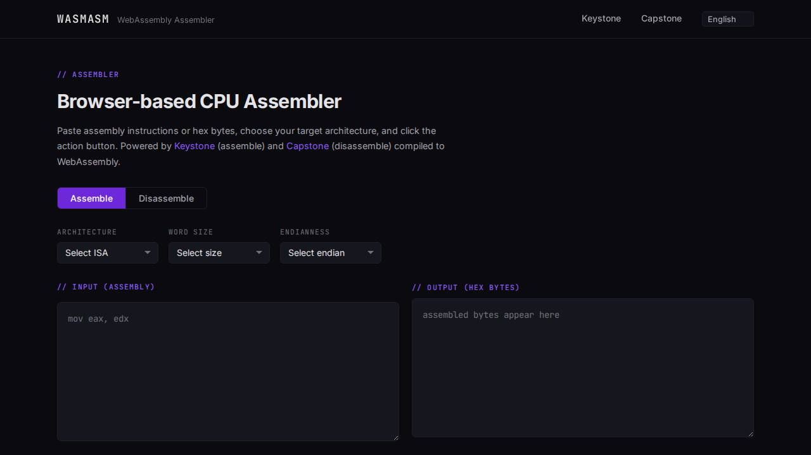

// Open Source — Software Engineering
WASMASM
A browser-based multi-architecture CPU assembler and disassembler powered by the Keystone Engine compiled to WebAssembly — no server required.
WASMASM lets you paste assembly instructions directly in the browser, select a target architecture and word size, and instantly get the assembled bytes back — or paste hex bytes to disassemble them. The Keystone assembler engine and Capstone disassembler engine are compiled from C to WebAssembly via Emscripten, so the full assembly pipeline runs entirely client-side with zero backend infrastructure. A lightweight Vue 3 front-end wires up the controls and handles shareable URL state so assembly snippets can be linked directly.
Supported Architectures
Test coverage: 20 C unit tests · 20+ Jest unit tests · 20+ Playwright E2E tests
// Screenshots
